For each part of the improvement plan, this page shows how AnnoTinder works today and how it would work afterwards. "Now" pictures are real screenshots. "After" pictures are mockups or sketches, with nothing built yet.
Now real screenshot, repo main, 20 Nov 2026Will OPTIMA commitment (Task 2)Can proposal, not agreed yet
Today
How AnnoTinder works now
A researcher builds a study and shares a link. Coders open the link and answer questions about each unit. The server hands out the units, checks the answers and stores them.
researcher six steps
Log in and create a study
Write the questions in the editor
Upload the units as a CSV table
Deploy and copy the link
Watch progress on the Overview
Download the results as a zip of CSV files
coder three steps
Open the link, usually on a phone. No account needed
Answer one question at a time: buttons, scales, dropdowns, swipes
Get the next unit until done. Stop and continue later if needed
The server decides which unit comes next, for example so that each article is coded by three people.
The editor: the question tree on the left, one question on the right
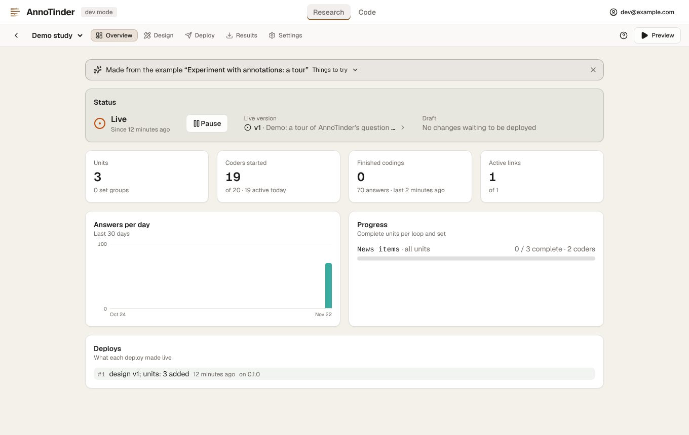
The Overview: status, counts and progress of one study
Today AnnoTinder and AmCAT are two separate systems, and a person carries files between them. After the plan they are connected, share one login, and machine coders work next to the human ones.
Now
After the plan
Phase 1 Can
Easier screens
Phase 1 gives a new researcher a visible path through the app, and gives coders a clear sense of progress. Seven of its ten changes are shown here.
1.1 A "what to do next" checklist
Now the five tabs look equally important. After: the Overview shows the six steps, ticks off what is done and offers the next action.
Now
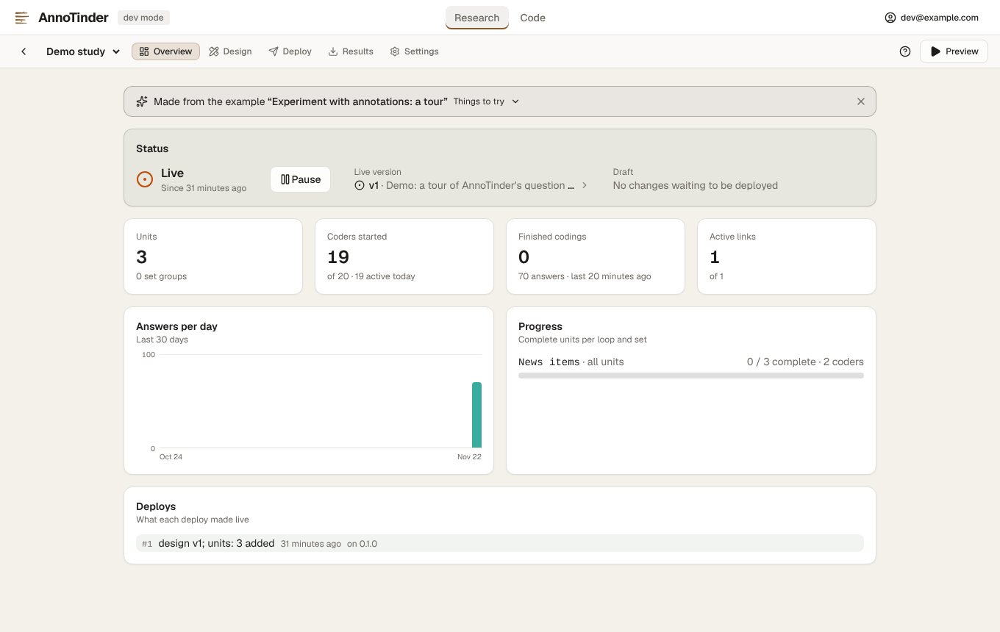
Proposed
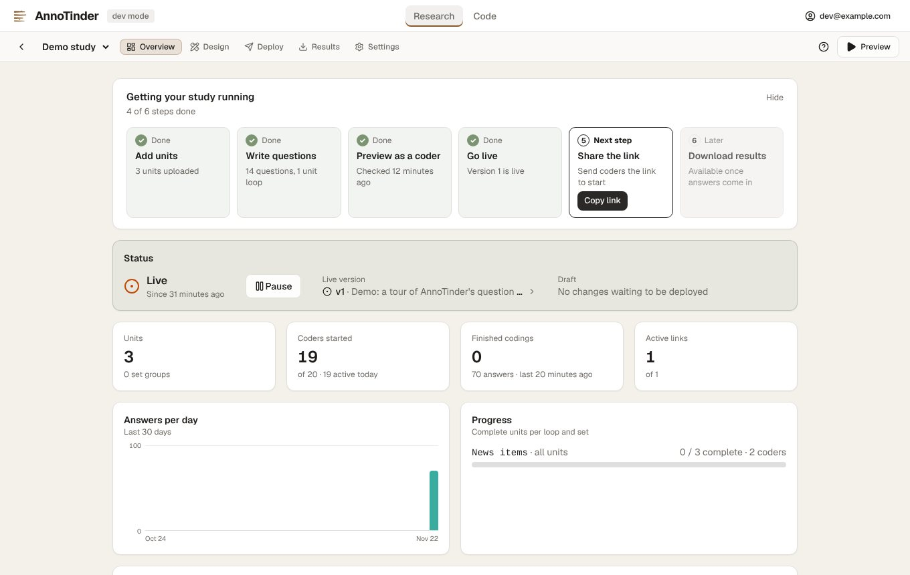
1.2 and 1.3 A simpler editor, and "Share" instead of "Deploy"
Now the editor shows every control at once, and Deploy is both a tab and a button. After: a question list and one "Publish changes" button. The rest sits under Advanced, and the tab is called Share.
Now
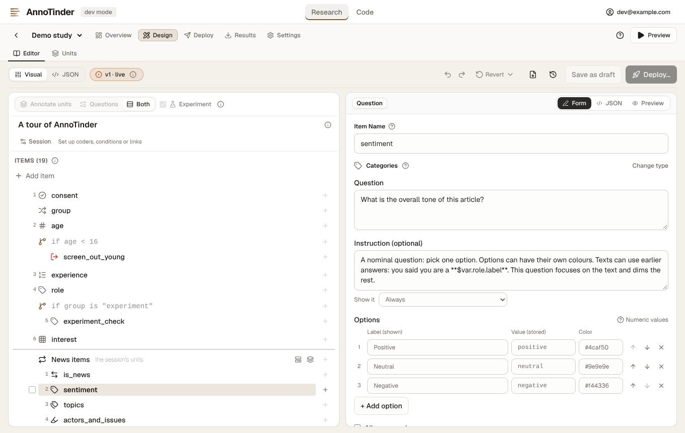
Proposed
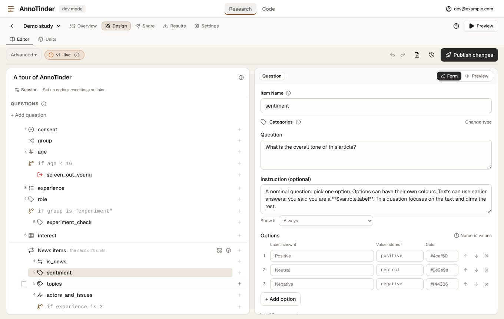
1.4 Links you can manage where they are listed
Now links are set up in the editor under "Session", and the three actions are icons without text. After: a "New link" button and labelled actions.
Now
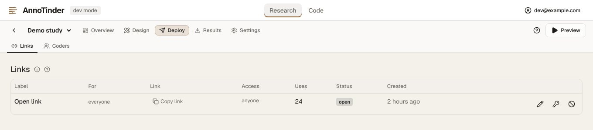
Proposed
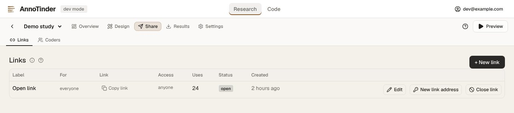
1.5 Study cards that show status
Now a card shows a name and a date. After: live or paused, coders, answers and progress, without opening the study.
Now
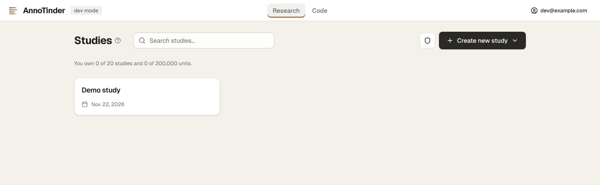
Proposed
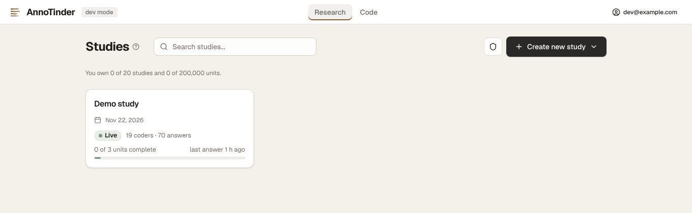
1.7 A coder top bar that shows progress
Now there are six icon buttons and a counter that reads "1 · 2". After: "Article 1 of 3, Question 2 of 6" with a progress bar. The other controls move into the menu.
Now
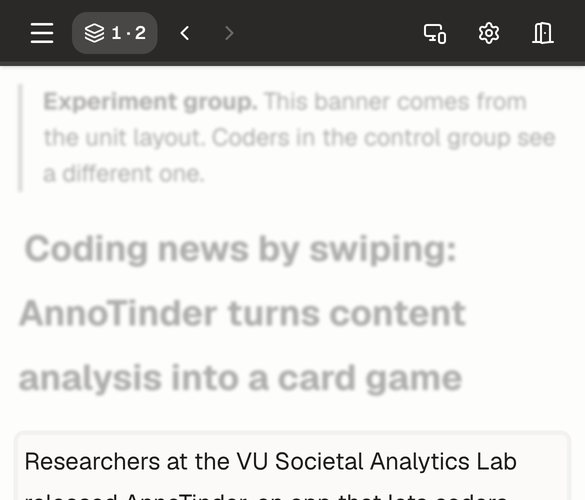
Proposed
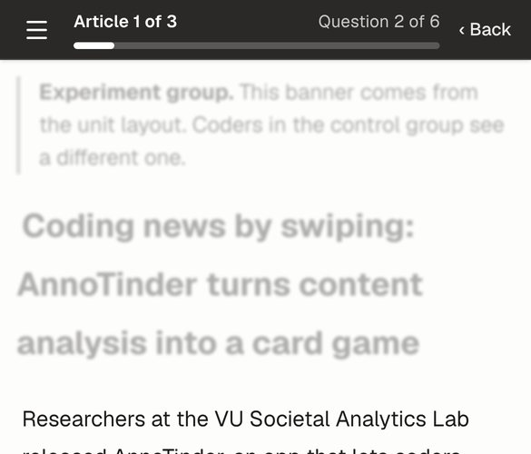
1.8 and 1.9 A start screen that sets expectations, in the coder's language
Now the first screen is the consent text only. After: how long it takes, how many units, that you can pause, and a language choice for the fixed text.
Now
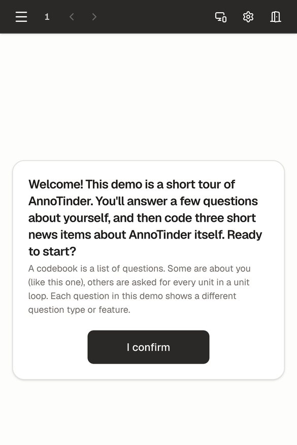
Proposed
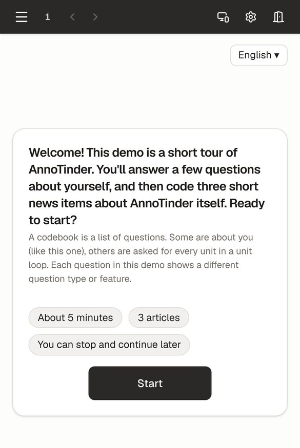
Not pictured: 1.6 one word per thing (question, unit, publish, coder, design) and 1.10 a search box for the help topics.
Phase 2 Will
AmCAT integration
Phase 2 is OPTIMA Task 2. An AmCAT user starts an annotation job from a set of documents, and the answers come back onto those documents, with one login.
The researcher's work, step by step
Now: 9 steps, 6 by hand
Search in AmCAT and export the documents as CSVby hand
Log in to AnnoTinder with a second accountby hand
Create a study and write the questions
Upload the CSV as unitsby hand
Deploy and share the link with coders
Coders work
Download the results zipby hand
Match the answers to the AmCAT documents by idby hand
Upload the answers into AmCAT as new fieldsby hand
After: 4 steps, none by hand
Search in AmCAT and click "Annotate these documents"
Choose the questions (a template or your own design) and share the link with coders
Coders work
The answers appear on the documents in AmCATautomatic, with who coded what and when
AmCAT creates the study, sends the documents, and fetches the answers through AnnoTinder's researcher API.
One login instead of two
Now
AmCAT users log in through MiddleCat. AnnoTinder researchers log in through Keycloak. The same person has two separate accounts, and neither system knows they are the same.
After
One login opens both. Which way is still open: both systems use one provider, or one accepts the other's logins. This is the first decision to take.
How the answers travel back
First version: asking on a timer
Later: a webhook
The new screens in AmCAT
These four are rough sketches of what the screens need to hold. AmCAT's real look will differ.
AmCATclimate AND (policy OR law)
500 documentsExportAnnotate these documents
Parliament votes on new climate law2026-03-02
Farmers protest emission rules2026-03-05
EU agrees 2040 target2026-03-09
1. A new button on a search result
New annotation job
Show coderstitletextdatesource
QuestionsTone: positive / neutral / negativeYes / no swipeMy own design
Coders per document135
Save answer astone
CancelCreate job
2. What to show, what to ask, how many coders
Annotation jobs
Climate tone, 500 documentslive
310 of 500 complete · 3 coders · open in AnnoTinder
4. Answers as fields on the document, with their origin
Phase 3 Can
Data quality
Phase 3 answers "can I trust this data?" inside the app. Now a researcher downloads the zip and works it out in R or Python. The numbers in the mockups are made up.
3.1 and 3.4 Agreement and a preview on the Results page
Now Results is one download button. After: an agreement score per question, a warning where a question is unclear, and a few rows of the data.
Now
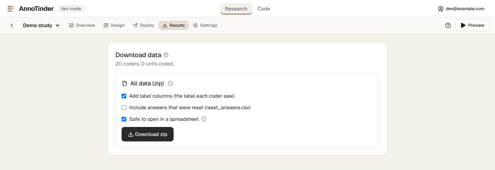
Proposed
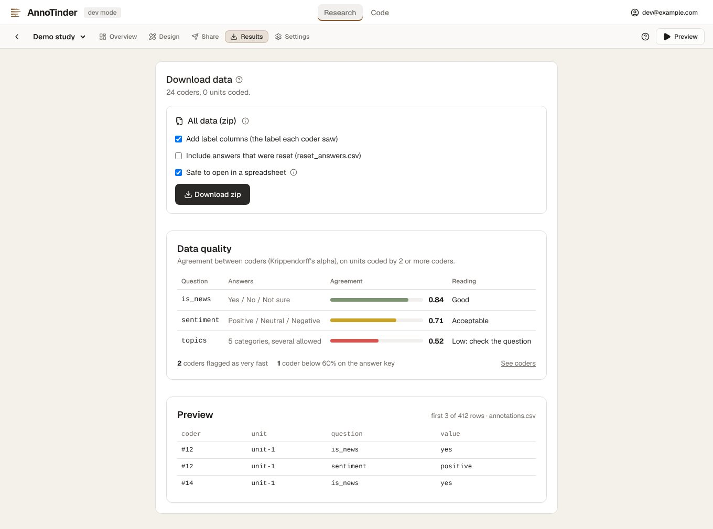
3.2 A quality score per coder
Now the coder list shows counts and times. After: each coder's score against the answer key, and flags for very fast or repetitive answering. The first row shows a machine coder from Phase 4.
Now
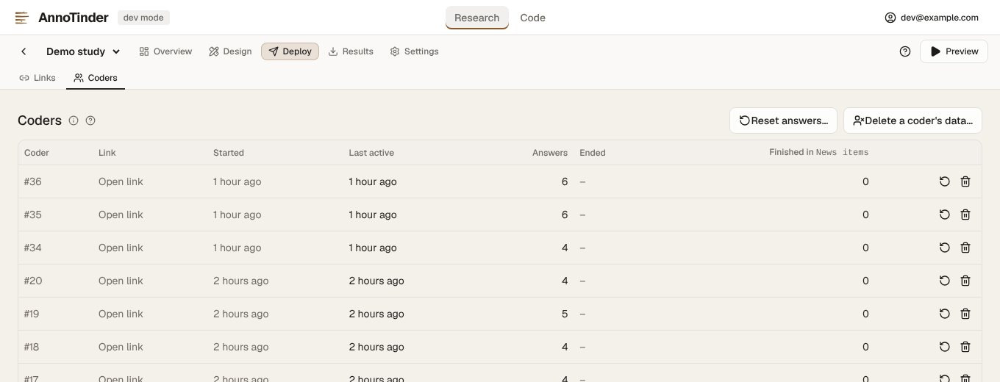
Proposed
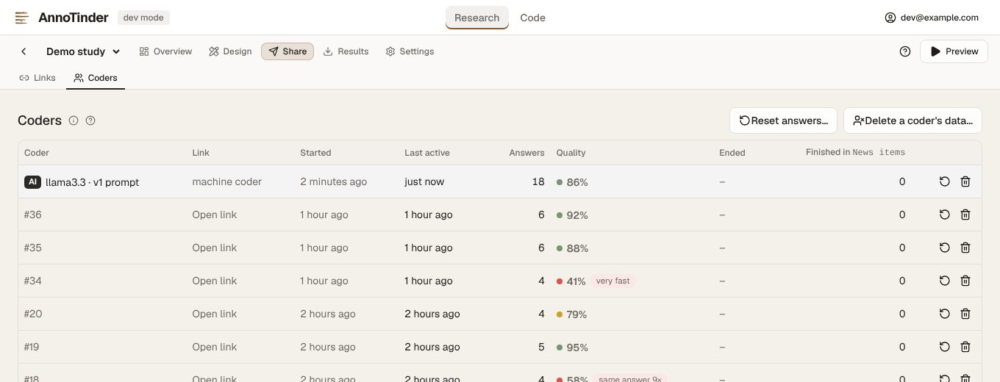
Now
Coders start straight away
A new coder goes from the consent screen to real units. Mistakes made while learning end up in the data.
3.3 After
A practice round first
The coder gets a few practice units
After each answer they see the right one and why
Once they pass, the real units start
Builds on the answer keys that already exist. The OPTIMA proposal asks for coder training.
Not pictured: 3.5 an email when a study finishes or a link runs out.
Phase 4 Can
Machine coders
Now every answer comes from a person. After Phase 4 a model can answer the same questions, so a few hundred human-coded articles can become labels on a whole collection.
LLM coder
Trained classifier
Needs
The codebook text only
A few hundred human-coded examples per question
Best for
Quick first results, new or open questions
Labelling a large collection cheaply, the same way every time
Weak point
Slow and costly at scale; hosted models change over time
One model per question; fixed categories only
The LLM coder, screen by screen
An LLM coder needs no training data. The researcher adds it like a coder, tries it on a few units, and then decides how far to trust it.
A. Add a machine coder
On the coders page, next to the human coders. The researcher picks the kind, where it runs, the model and which questions it answers. "This server" keeps restricted texts in-house. A trial on 5 units comes before anything else.
Mockup
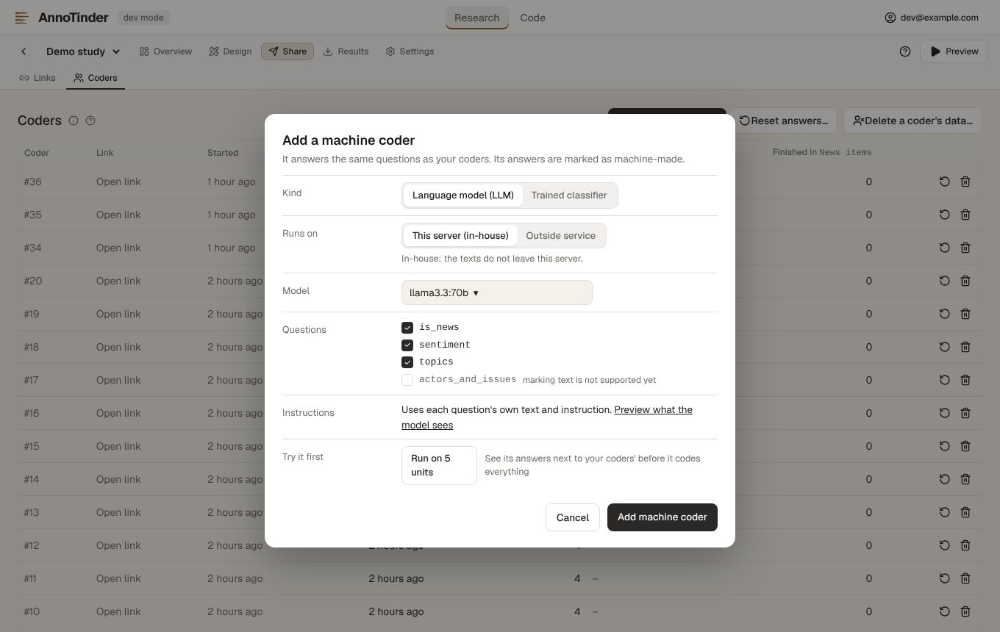
B. It appears in the coder list
The machine coder is one more row, marked AI, with its model and prompt version. It gets the same quality score as everyone else.
Mockup
C. Compare it with the human coders
The key question is whether the model agrees with the coders as well as they agree with each other. The screen answers that per question, lists the units where they disagree with the model's reason, and offers the next step: let it code the rest, only some questions, or remove it.
Mockup
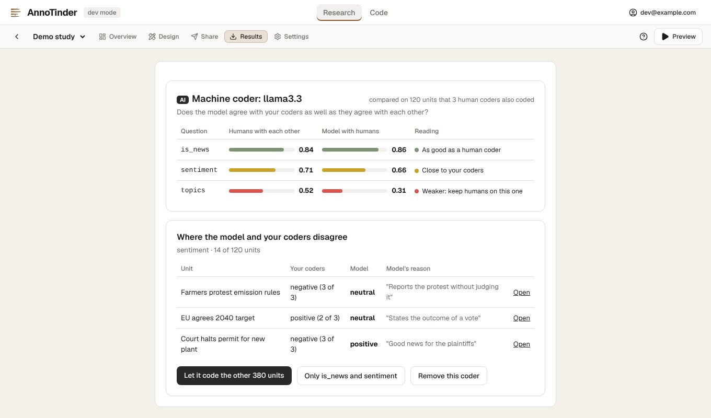
The classifier, screen by screen
A classifier is for scale. It learns from the human answers to one question and then labels the whole AmCAT collection.
D. Train, test, then label the rest
Four steps in one screen. The test shows how often the classifier gives the same answer as the coders on articles it never saw. The trial run shows how sure it is about the rest, before any label is saved.
Mockup
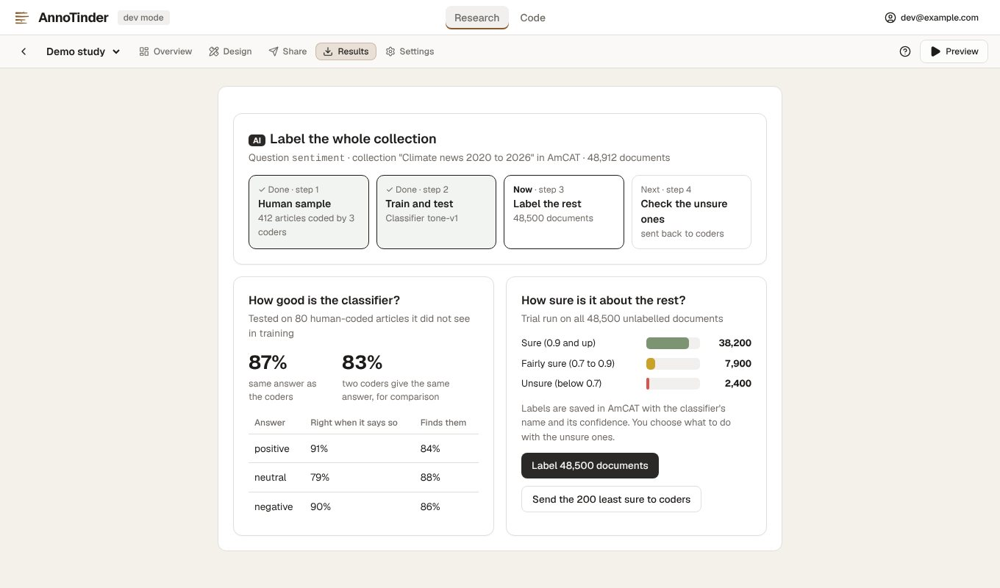
E. Machine labels in AmCAT, and the unsure ones go back
In AmCAT each label shows who or what gave it and how sure it was. Searches can leave machine labels out or set a minimum confidence. The least sure documents become a new job for the human coders, who see them like any other unit. Rough sketches again.